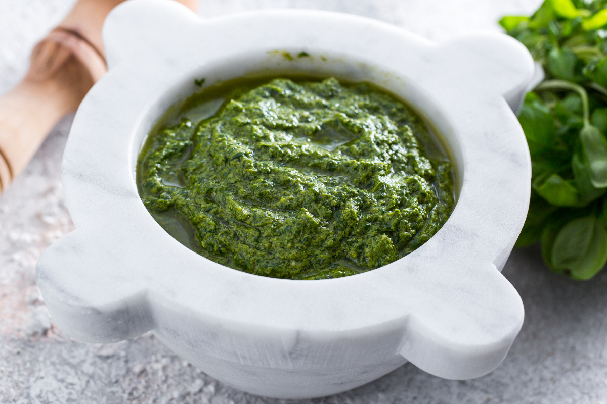

Pesto alla genovese

Description
Pasta and pesto – one of Italy’s iconic first course dishes and one of the best summer recipes there is. Let’s be honest, when you bring pesto alla genovese to the table, it’s always a party, and when it’s the real thing, made with the right ingredients and perfect technique, it’s a whole other story.
Ingredients
- Basil (70 g)
- Parmigiano Reggiano DOP cheese (50 g)
- Extra virgin olive oil (70 g)
- Parmigiano Reggiano DOP cheese (50 g)
- Sardinian pecorino cheese (30 g)
- Pine nuts (30 g)
- Garlic 2 cloves
- Coarse salt (3 g)
Steps
- Remove the basil leaves from the stems and place them in a colander
- Rinse quickly under cold running water, then transfer them to a dish towel and dry them
- Remove the germ from the garlic cloves and cut them in half, then place in a marble mortar. Work the garlic with a wooden pestle until you get a cream
- At this point, add the pine nuts and continue to grind
- Always start with pounding movements, then moving on to circular movements 10. Make sure you scrape around the inside of the mortar with a spoon to unstick the ingredients; that way, you’ll get an even pesto
- Once a paste has formed, add the basil leaves and coarse salt
- Once the consistency is creamy and even, add the pecorino, in chunks, and grind in the same way to incorporate it, then add the Parmigiano Reggiano
- When all the ingredients have been reduced to a cream, pour in the oil and circle the pestle around for a couple of more minutes